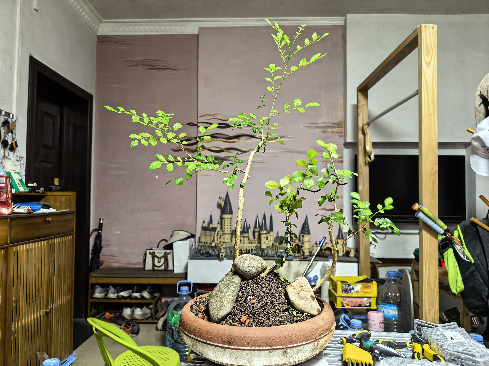
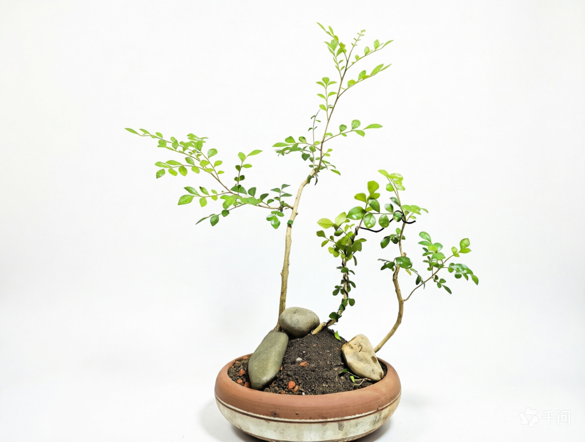
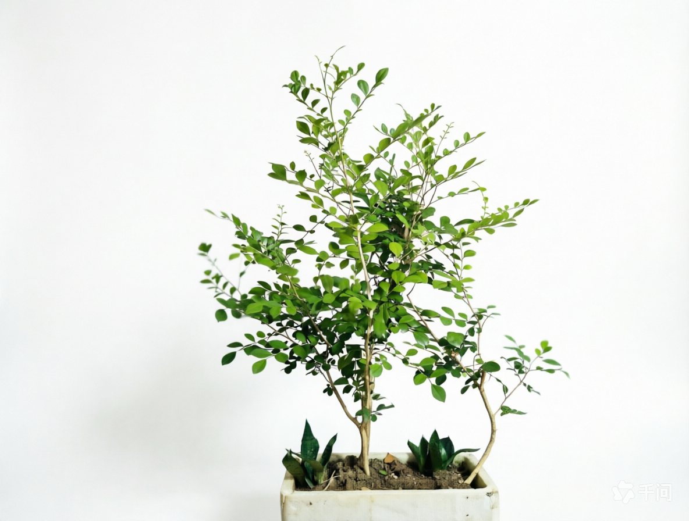
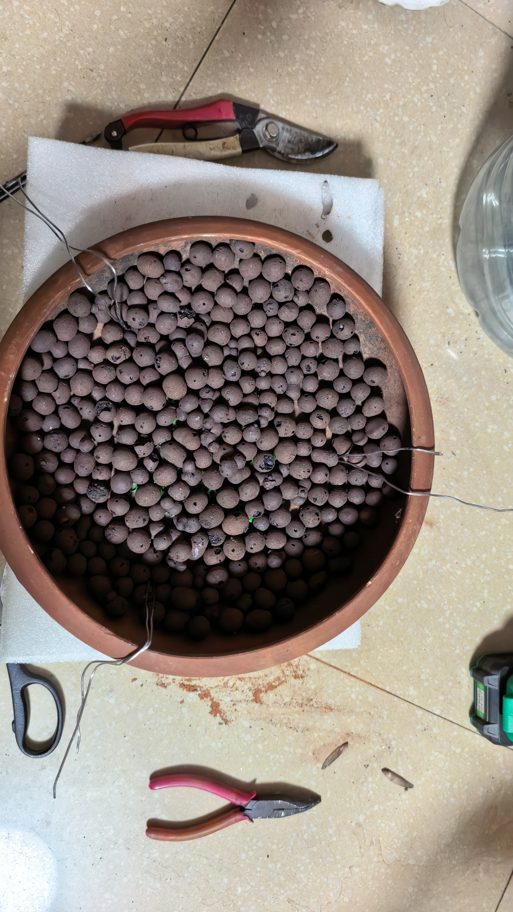
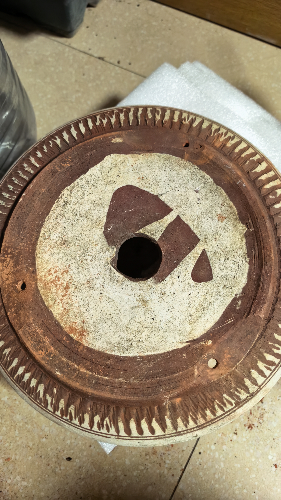

封面照片
封面照片assets/images/jiulixiang/cover.png
九里香
Murraya paniculata
芸香科 · 九里香属
岭南派
观花闻香
耐修剪
花香远播、叶小枝密，是岭南盆景最经典的树种之一。这一株是双干式素材， 从原样桩起步，记录它到成景的全过程。
壹它是什么样的树
- 香花期 4—9 月，白色小花簇生枝头，香气清冽远播，故名“九里香”。
- 叶小枝密羽状复叶，小叶厚革质、浓绿光亮，天然适合小尺度造型。
- 皮白枝苍树皮灰白，日久自然开裂起皮，容易养出苍劲老态。
- 极耐修剪萌发力强、愈伤快，是练习“蓄枝截干”最理想的树种。
- 唯独怕冷越冬需 5℃ 以上，一次霜冻足以毁掉几年蓄的枝条。
贰它的四张面孔
原样

原样照片01-yuanyang-01.jpg
成品

成品照片02-chengpin-01.jpg
背部
 背部照片
背部照片03-beibu-01.jpg
制作过程

制作过程照片04-guocheng-01.jpg

制作过程照片04-guocheng-02.jpg

制作过程照片04-guocheng-03.jpg
叁怎么把它养好
- 光照全日照，每天 4—6 小时直射光；越冬期放南向窗台最亮处。
- 浇水见干见湿，浇则浇透；忌积水也忌久旱，夏季早晚各查一次。
- 土壤疏松透气微酸性（赤玉土 4 : 腐叶土 3 : 粗砂 3），2—3 年换盆一次。
- 施肥生长季薄肥勤施（每 10—15 天），花前增磷钾；盛夏与冬季停肥。
- 修剪新枝长到 5—8 cm 留 2—3 节短截，反复蓄枝；随时抹芽，花后剪残花。
- 越冬10℃ 左右入室，保持 5—15℃；远离暖气出风口，次年逐步出室。
肆制作过程
- 选桩定面 —— 看四面根盘与主干走向，定下正面和造型思路。
- 清土修根 —— 去旧土、理根系，剪去盘绕根与烂根。
- 截干定托 —— 按预想高度截干，确定第一出枝位置。
- 蟠扎造型 —— 铝线 45° 缠绕枝条，调整枝路走向。
- 上盆 —— 盆底垫网穿线、铺陶粒，配微酸颗粒土栽正。
- 蓄枝成景 —— 新枝半木质化后留 2—3 节短截，反复蓄养。